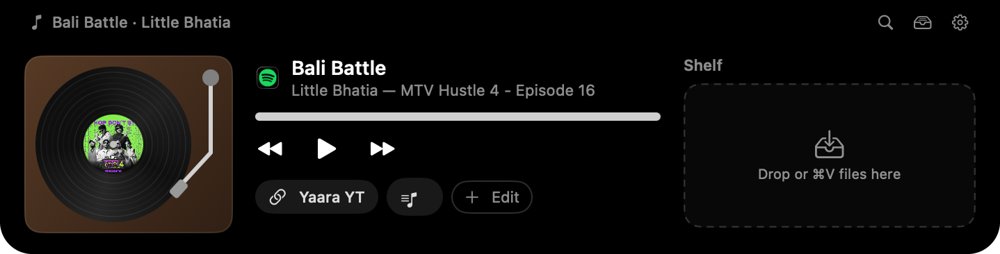

Your Mac's notch, put to work.
Hover the notch and it opens into a little island: what's playing on a spinning record, a shelf for files you're moving around, and a launcher that understands plain words.

The island, as it opens from the notch.
See it in 85 seconds.
The ⌥ wheel for your apps, the Smart Wheel for files in Finder, the ⌥ Space launcher, and music and files at the notch.
Right where you look.
Everything lives in the notch or under your ⌥ key, so it's never in the way and always one move away.
A turntable for what's playing
Spotify, Music, or YouTube in your browser. The record spins while music plays. Lift the tonearm off to pause, set it back down to play.
A shelf for files
Drop anything on the notch to keep a copy there, or press ⌘V. Drag it back out into any app when you need it. Your originals stay put.
A launcher that does things
Press ⌥ Space and say what you want: “open my repo”, “close all my Chrome tabs”, “volume 30”, “what's my IP”. An AI model opens it or runs the command for you, and asks first before anything risky.
An ⌥ wheel for your apps
Hold ⌥ on its own and a wheel opens at the pointer. Flick toward a slice to open its apps, or bring them back. Each slice can hold several apps that open together.
A Smart Wheel for files
Select files in Finder and hold ⌥ to convert them: images, PDFs, documents, video, audio and more. Press ⌥` for Compress, Share and actions for the file type.
A music library
Paste a Spotify or YouTube Music link, or drag a playlist onto the notch. Drop a record on the turntable to play it.
Install in a minute.
OptHelper isn't notarized by Apple yet, so macOS asks you to confirm it once. After that it opens like any other app.
-
Download and drag to Applications
Open
OptHelper.dmgand drag OptHelper onto the Applications folder. -
Allow it the first time
Open OptHelper, close the warning, then go to System Settings › Privacy & Security and click Open Anyway. Or paste this into Terminal instead:
sudo xattr -rd com.apple.quarantine /Applications/OptHelper.appIt asks for your Mac password. If it says Operation not permitted, turn on Terminal under System Settings › Privacy & Security › App Management, restart Terminal and run it again.
-
Grant permissions once
On first launch a window asks for everything OptHelper needs in one go, so you're not interrupted later.
-
Hook up an AI model for the launcher
Either install and sign in to the Claude Code CLI, or add a Gemini API key from the menu bar icon › Provider.